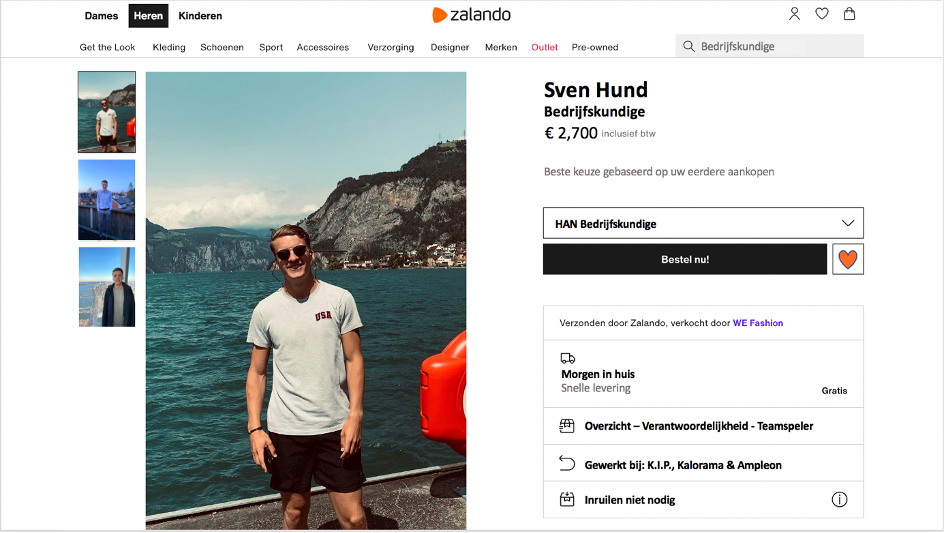

Week 1 : HTML
In de eerste week van de leerlijn Connection hebben we leren kennismaken met HTML d.m.v. de Hello World opdracht en hebben wij een eerste groepsindeling gemaakt voor de groepswebsite die wij samen als klas dienen te maken.
Hello World
De eerste opdracht die wij van Hubert hebben ontvangen heette 'Hello World', deze opdracht had als doel om een bestaande website om te vormen naar een profiel van jezelf en je op deze manier voor te stellen aan de rest van de klas.
Hierbij heb ik ervoor gekozen om een productbeschrijving van een kledingitem op Zalando om te vormen naar mijn persoonlijke profiel waarin mensen meer over mij te weten kunnen komen. Zelf vond ik het erg leuk om op deze manier meteen bezig te zijn met Connection, een leuke binnenkomer. Dit heb ik nu nog wel via PowerPoint gedaan omdat het de eerste week was, daarna zal ik dit zelf vast in HTML kunnen. Ik ervoer het als erg leuk en interessant om op deze manier creatief bezig te zijn en vooral lekker te beginnen met het gewoon doen.
Web Dev Team samenstellen
Nadat er tijd was voor de Hello World opdracht gingen we verder met het vormen van teams voor de gezamenlijke website die wij met de klas zullen gaan bouwen. Het doel van deze website is om een platform te creeëren waarop iedereen zijn of haar eigen portfolio kan uploaden en men hieruit bijvoorbeeld ook goede stukken kan highlighten. De klas diende hiervoor in vijf verschillende functies verdeelde te worden. Dit waren de volgende functies:
- Project managers
- Project architects
- UI/UX Designers
- Web developers
- QA / Testing specialists
Uiteindelijk ben ik toen samen met Ali, Max, Arwin, Amine & Ard in de UI/UX designers-groep terecht gekomen. Toen zijn we meteen bij elkaar gaan zitten en hebben we gebrainstormd over te stappen die we wilden gaan zetten en de eisen die wij belangrijk vonden voor het design van de website. Dit ging vanaf de start meteen erg soepel in mijn ogen. Er werden duidelijk afspraken gemaakt en een groepsapp opgestart die het makkelijk maakte om verder te gaan met zijn allen. Voor de week erop zal iedereen een moodboard maken en hopen we zo samen tot een moodboard te komen, hier kijk ik naar uit.